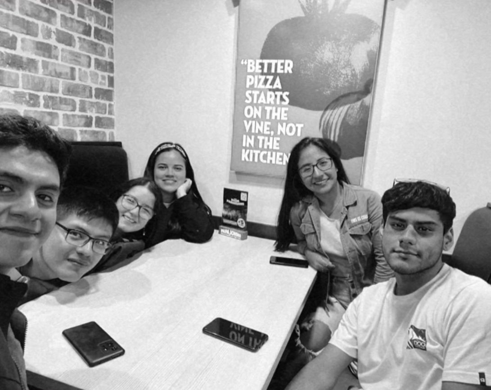

¿Quiénes somos?
Somos estudiantes de séptimo ciclo de la Universidad Privada del Norte de la facultad de Ingeniería de Sistemas Computacionales. Como amantes de los animales, nuestro proyecto se basa en fomentar el rescate y la adopción responsable de mascotas (perros y gatos) que en algún momento fueron abandonados o crecieron en las calles sin tener un hogar. Por ello, trabajamos con la información de distintos albergues en la zona norte para poder dar conocimiento de las mascotas que fueron rescatadas y están en adopción.
